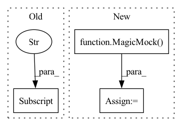

Pattern ID :27070
Before Change
auto_tokenizer.from_pretrained().convert_tokens_to_ids.assert_called_once()
n_articles = pd.read_csv(metadata_path)["cord_uid"].notna().sum()
n_sentences = n_articles * test_parameters["n_sections_per_article"] * test_parameters[
"n_sentences_per_section"]
indices = np.arange(1, n_sentences+1)
final_embeddings, retrieved_indices = compute_database_embeddings(fake_sqlalchemy_engine,
sbiobert,After Change
auto_model.from_pretrained().to.return_value = torch_model
tokenizer = Mock()
be = MagicMock(spec=transformers.BatchEncoding)
be.keys.return_value = ["input_ids", "token_type_ids", "attention_mask"]
be.__getitem__.side_effect = lambda x: torch.tensor(torch.ones([n_sentences, 10]))
tokenizer.return_value = be
auto_tokenizer = Mock()
auto_tokenizer.from_pretrained.return_value = tokenizerIn pattern: SUPERPATTERN
Frequency: 3
Non-data size: 3
Instances Fragment ID: 80600365
Project Name: bluebrain/search
Commit Name: 6eb30c8b3e77791ee4e407dd19d7a5e08fe5e132
Time: 2020-09-04
Author: jankrepl@yahoo.com
File Name: tests/test_embedding_models.py
M Class Name: TestEmbeddingModels
N Class Name: TestEmbeddingModels
M Method Name: test_sbiobert_embedding(3)
N Method Name: test_sbiobert_embedding(5)
M Parent Class:
N Parent Class:
M File Name: tests/test_embedding_models.py
N File Name: tests/test_embedding_models.py
M Start Line: 36
M End Line: 69
N Start Line: 40
N End Line: 76
Before Change
assert recovery_checkpoint == ml_runner_with_run_id.checkpoint_handler.trained_weights_path
mocks["run_training"].assert_not_called()
mocks["run_validation"].assert_not_called()
mocks["validate_model_weights"] .assert_not_called()
mock_trainer.test.assert_called_once()
After Change
ml_runner_with_run_id.container.run_inference_only = True
ml_runner_with_run_id.container.run_extra_val_epoch = run_extra_val_epoch
assert ml_runner_with_run_id.checkpoint_handler.trained_weights_path
mock_datamodule = MagicMock()
with patch("health_ml.run_ml.create_lightning_trainer") as mock_create_trainer:
with patch.object(ml_runner_with_run_id.container, "get_data_module", return_value=mock_datamodule):
with patch.multiple(
ml_runner_with_run_id, Fragment ID: 80600361
Project Name: microsoft/hi-ml
Commit Name: 3d632766440a7856712cb0ba40ee6f5cac9fd5c1
Time: 2023-01-18
Author: 37396332+kenza-bouzid@users.noreply.github.com
File Name: hi-ml/testhiml/testhiml/test_run_ml.py
M Class Name: AnonimousClass
N Class Name: AnonimousClass
M Method Name: test_run_inference_only(2)
N Method Name: test_run_inference_only(1)
M Parent Class:
N Parent Class:
M File Name: hi-ml/testhiml/testhiml/test_run_ml.py
N File Name: hi-ml/testhiml/testhiml/test_run_ml.py
M Start Line: 327
M End Line: 345
N Start Line: 382
N End Line: 407
Before Change
with patch.multiple(ml_runner_with_run_id, run_validation=mock.DEFAULT, run_inference=mock.DEFAULT) as mocks:
ml_runner_with_run_id.run()
assert mocks["run_validation"].called == run_extra_val_epoch
mocks["run_inference"] .assert_called_once()
def test_model_weights_when_resume_training() -> None:After Change
with patch.object(ml_runner_with_run_id.container, "get_checkpoint_to_test") as mock_get_checkpoint_to_test:
with patch.object(ml_runner_with_run_id, "run_inference") as mock_run_inference:
with patch.object(ml_runner_with_run_id, "after_ddp_cleanup") as mock_after_ddp_cleanup:
mock_get_checkpoint_to_test.return_value = MagicMock(is_file=MagicMock(return_value=True))
ml_runner_with_run_id.run()
mock_after_ddp_cleanup.assert_called_once()
mock_get_checkpoint_to_test.assert_called_once()
assert mock_trainer.validate.called == run_extra_val_epoch Fragment ID: 80600360
Project Name: microsoft/hi-ml
Commit Name: 3d632766440a7856712cb0ba40ee6f5cac9fd5c1
Time: 2023-01-18
Author: 37396332+kenza-bouzid@users.noreply.github.com
File Name: hi-ml/testhiml/testhiml/test_run_ml.py
M Class Name: AnonimousClass
N Class Name: AnonimousClass
M Method Name: test_resume_training_from_run_id(2)
N Method Name: test_resume_training_from_run_id(2)
M Parent Class:
N Parent Class:
M File Name: hi-ml/testhiml/testhiml/test_run_ml.py
N File Name: hi-ml/testhiml/testhiml/test_run_ml.py
M Start Line: 352
M End Line: 357
N Start Line: 414
N End Line: 426